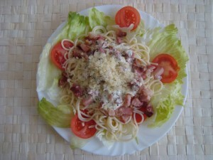

Možná to tu Hrabětem moc zahlcuju, ale tahle básnička si podle mě zaslouží samostatný příspěvek…Vybrala jsem si pro její uveřejnění docela příznačný čas, protože momentálně to vypadá, že už letos žádné léto nebude (vytahuju sibiřky a elektrické topítko 8-)…).
PODZIMNÍ
Obloha – šedobílá labuť
za teplem k moři odlétá
a v parku zametají slova,
která tu zbyla od léta.
Třesavka reklam v očích zebe.
Letní šlágry už vychladly.
Po řece pluje ztuhlé nebe
pod most podzim zapadlý.
Maličké rudé slunce
se loudá po břehu
jak mince, kterou zítra
už vezmou z oběhu.
Hřeju ho chvíli v dlaních
a dýchám na něj zblízka…
Není to žádná póza!
Ne. Jenom se mi stýská.
A teď tu zlatou starou minci
do vody házím jako vzkaz
(do řeky místo do fontány).
To abys přišel!
I když je podzim!
To abys přišel zítra zas…
Podzim bych zrušila. Jediná pozitivní věc, kterou podzim přináší, je burčák…
(pozn. Tento příspěvek jsem vyplodila včera v noci a nutno říct, že už v poměrně pokročilém stádiu lahve Sangrie; naštěstí však ve mně zbylo dost soudnosti na to, abych se rozhodla uveřejnit ho až poté, co si ho celý za střízliva přečtu. Až na několik drobných úprav nakonec obstál…:D Uvedené osoby nejsou smyšlené a patří jim můj dík :)) !)
Nápad na tento článek nosím v hlavě už několik dní a pořád si říkám, jestli to teda napsat nebo ne. V poslední době mi bylo tak nějak mizerně a melancholické nálady jsem se nemohla zbavit, teď se však vznáším na vlnách Sangrie a svět se to zkrátka musí dozvědět: JSEM MILOVÁNA !!! A vy jste určitě také ! Pokud se o tom chcete přesvědčit, mám pro vás návrh – uklízejte !
Několik uplynulých dní jsem měla v plánu strávit nad stránkami Obchodního zákoníku…nechuť však byla silnější (doufám, že si to nečteš, Zdeni O:-)…) a já se s vervou pustila do gruntování nejprve svého a pak i bráchova pokoje. Ne že bych to dělala zas tak často, nicméně teprve dnes mě udeřila do očí zvláštní skutečnost…můj pokoj je složen z dárků !
Napadlo mě to přesně ve chvíli, kdy jsem utírala prach ze sady barevných cinzano-skleniček, které jsem dostala od strýca k 18tinám. Je to jedna z nejroztomilejších věcí, kterými jsem vůbec kdy byla obdarována. Nějaký čas jsem skleničky s motivy světových metropolí obdivovala u strýca doma a on mi je nakonec věnoval ! Miluju je všechny, ale nejradši piju z Moskvy :D…
Od utírání prachu ze skleniček jsem se přesunula ke stírání prachu z kytary, ehm. Musím říct, že jsem měla hezké dětství a ze všech vánočních dárků jsem byla vždycky nadšená (obzvlášť z loutkového divadla, které dneska odpočívá na půdě), ale tu vůbec největší vánoční euforii jsem zažila až jako dospělák (jaký paradox :D!), když mi brácha nadělil pod stromeček zaoceánské DVDčko o tom, jak Beatles dobývali Ameriku, a vedle něj ležela španělka z bazaru 😀 ! Že jsem se svými kytarovými pokroky došla pouze k bodu, kdy se mi ji podařilo naladit, už je druhá věc…ale já se to jednou naučím !!!
V čem je brácha opravdu nepřekonatelný, jsou narozeninová přáníčka, a já mám nejradši to, které mi poslal z Mnichova, když jsem měla osmnáct (to byl krásný čas, dostala jsem tehdá tolik skvostů :-). Krom trefného textu o tom, abych zahodila všecky iluze, které mi snad dosud zbyly :D, je na něm úžasná „slunečnice“ od Salvadora Dalího, „kterou autor mylně považuje za ananas“. Ano, byly to opravdu skvělé narozeniny :DDD…
Jeden z mých nejsrdcovějších dárků se mnou už čtvrté léto sdílí jedno lože O:-)…je chlupatej a bez jeho objetí bych doma už asi neusnula 😀 ! Dřív jsem s ním trávívala noci u Hýsků (byla to láska na první pohled) a pak mi ho Terča donesla k maturitě jako talisman. Prospěla jsem s vyznamenáním a od těch dob tento polární medvěd, který už dávno není bílý, (ačkoliv ho občas nemilosrdně vyperu 8-)) má své čestné místo v mojí posteli :-). Během úklidu jsem zjistila, že jsem Terčin pokoj ochudila ještě o jednu unikátní věc – portrét Briana Maye, který jsem obdivovala, když jí visíval na dveřích, a který jsem od ní později dostala k Vánocům. Achjo, ještě dnes jsem celá dojatá! Tak krásnýho chlapa už asi k Vánocům nikdy nedostanu O:-)…
Většina mých knížek v knihovně jsou dárky. Ani si nevzpomínám, kdy jsem si naposled já sama nějakou knížku koupila(krom učebnic do školy 8-)). Je fakt, že knížky miluju a jsem vždycky nadšená, když nějakou dostanu, ale co mi udělá dvojnásobnou radost, je knížka s věnováním ! Mám jen pár exponátů a nedala bych je zanic na světě. Pište do knížek, prosím. Není to barbarství !
Jediná sdrcovka, kterou teď u sebe nemám, ale rozhodně ji musím zmínit, je ptačí fotoalbum, které jsem dostala od svého zlatého muže k prvnímu výročí našeho seznámení. To má své čestné místo v pokoji v Brně na mém pracovním stole, kde mám pořád na očích, co všechno jsme spolu za první rok prožili (obzvlášť první snímek, vyfocený ráno po našem seznámení, má skutečně historickou hodnotu :D!!!), a mám slíbeno, že každý rok v den našeho výročí do něj přibude nová várka fotek našich společných zážitků o:-).
Tak teď už snad veříte tomu, že jsem milována. A to se mi sem toho ještě spoustu nevešlo ! Dnes mi do mé pomyslné síně slávy přibyla flaška Sangrie, s kterou mi Pepa přišla blahopřát k narozeninám. Díky ní a této flašce jsem se tady a teď odhodlala zavzpomínat na všechny ty báječné okamžiky svého života…vlastně jsem se ke spoustě báječných věcí odhodlala právě díky Pepě (a mnoha dalším flaškám Sangrie :D…teda nejen Sangrie…:D), za což bych jí zde chtěla vyjádřit svůj dík, ikdyž vím, že na můj blog nechodí, a tak si to tu zřejmě nepřečte.
Okamžiky, kdy býváme nejčastěji obdarováváni (narozeniny, Vánoce…) nejsou tím úplně nejoptimističtějším obdobím roku, alespoň mě nutí vždycky tak trochu bilancovat a ne vždycky se člověk rád ohlíží zpět. Když se ale pustíte do úklidu (a neznám lepší čas pro úklid, než zkouškové :D…), možná taky objevíte spoustu zapomenutých pokladů, které stojí za to vzít do rukou a oprášit :-)…
„…možná že zrovna dnešní ráno
přinese amnestii
promlčeným láskám…“
Nějak se mi v tuhle chvíli nechce psát (vše, co jsem měla na srdci, bylo stejně už řečeno v předchozím příspěvku) a krom toho myslím, že úryvky jsou samy o sobě dost všeříkající, a tak nepotřebují můj komentář…Stále Hrabě. Stále Blues. To asi že už se blíží ten podzim…
„…Posilněte se večer vás budou operovat
Vezmou vám srdce Máte příliš velké srdce
na to abyste s ním mohl žít
…
Je to smutné nebo možná směšné
ale asi jim umřu pod nožem
protože jenom ty
máš krev
stejné skupiny jako já…“ (Infekce)
***
„…Dobrou noc
Jsi krásná i když spíš
Dobrou noc
Je slyšet jak přichází den
Pomalu jako by se vracel z flámu
Bloudí
ulicemi hospod a chrámů
Teď zívá
Zastavil se na rohu
Spi
Já nemohu…“ (Ukolébavka)
***
„…V očích luceren se leskne
vůně durmanu
a tvoje dlaně
svěží
jak vítr po ránu
se modlí s mými tu nejkrásnější
súru z koránu…“ (Až bude svítat)
***
Déšť
Na horkých střechách zasyčel déšť
jako když hoří suchá tráva
Promoklá tramvaj odbíjí šest
Na město tiše poprchává
Jdu sama v dešti Za řekou hřmí
Ne nevadí mi zmoklá hlava
Jen se mi zdají bláznivé sny
že prší na město voňavá tráva
Potichu si zpívám
do rytmu deště
náhodná slova
o zmoklém městě
Jdu Nevím vůbec kam
a s každou kapkou
zas znova začínám
Pod polštář dám si až půjdu spát
blues o dešti v němž voní tráva
Snad se mi bude celou noc zdát
že venku tiše poprchává
„…Čas není vlastně zlý Je přísný spíš než krutý
Noc padne do roka jak dukát do fontány
A najdeš ve schránce můj lístek načmáraný…“ (Dnes je to rok)
***
„…a najednou se mi chtělo
zůstat tak ležet pořád
a nedýchat
nic
než tu mokrou vůni letošní trávy květin a brouků
narozených včera k večeru
všech těch prostých a zázračných věcí
které tě tolik připomínají…“ (Výcvikový prostor)
***
„…Hledám tě
a je to
asi legrační
naivní a beznadějné
Je přeci tolik tramvají v kterých mě můžeš minout…“ (Reduta blues)
***
„…Červená , lidská
krev vsakuje do hlíny.
Zkus poznat, kdo je vrah
a kdo je
nevinný…
…
Červená, lidská krev v kalužích hasne.
A hvězdy na nebi
jsou cynicky krásné!
…
Je noc a je tak pozdě, že i déšť usíná…“
(Půlnoční mše v dešti)
„Zavři oči
a bude to všechno jako na počátku světa…“
(Zavři oči)
To, co sem dnes hodlám napsat, bude bezpochyby jeden z mých největších blogových výlevů :D…a to proto, že ho věnuji našemu největšímu českému básníkovi. V poslední době už poezii moc nečtu, ale podlehla jsem melancholii pochmurného deštivého večera a vůbec dnů minulých a především náhlé vlně nostalgie, která se mě zmocnila, když jsem v krabici po včerejším stěhování našla dnes ráno obal básnické sbírky s příznačným názvem „Blues“…Má záliba v úryvcích je nyní konfrontována s opravdu složitou situací – jakou báseň, jaký verš vybrat, když jsou všechny tak dokonalé, když se ke všem váže nějaká souvislost a vzpomínka ? Těžko říct, co je v poezii Václava Hraběte tak silného, ale když ji čtu, cítím v sobě euforii, kterou ve mně zcela běžně vyvolává třeba hudba, ale u žádného jiného básníka mě ještě nepotkala v takové míře. Možná je to tím, že Hrabětova tvorba je právě hudbou silně inspirovaná a ovlivněná. V každé básni je něco, co mi mluví přímo z duše, a i témata, která Hrabě vybírá, jsou mi blízká. Velmi často se v jeho básních objevuje motiv noci a svítání, podzimu, jazzu a blues a pochopitelně motiv ze všech nejčastější a nejtypičtější – láska…
„…Pro jednu bláznivou holku, kvůli které jsem se naučil hrát džez, toulat se po nocích, nebýt spokojený, nemít klid…“ (Prolog)
Už si moc dobře nevzpomínám, jak se Václav Hrabě objevil v mém životě. Zato vám můžu alespoň přiblížit, jakým způsobem pronikl do života české beatnické scény. Koncem padesátých let, ve zlaté době Reduty, přišel tento příbramský rodák do Prahy. Nekonformní svět mladých lidí po vlně free jazzu zasáhla na počátku 60. let beat generation . Corso, Ferlinghetti, Kerouac a především Ginsberg ovlivnili mnoho mladých generací a brzy se objevila beatnická poezie i u nás. Hrabětovy verše jsou pro tu dobu nejcharakterističtější…
„…Třaslavý topol
Holý jak věta
Zavřete okna!
Je konec léta…“ (Podzim)
Hrabě ve svých básních vyzdvihuje důležitost smyslových prožitků a prostých radostí ze života. Dává důraz na opravdovost a po vzoru beatniků odmítá jakékoliv životní jistoty, podle známého hesla žije pouze pro dnešek a nemyslí na zítřek. Proto možná ani nepřekvapí způsob, jakým Václav Hrabě odešel z tohoto světa – na sklonku zimy roku 1965 umírá v Praze nešťastnou náhodou na otravu plynem.
„…A mně se chce tak spát
Spát
ve stínu tvých vlasů
Spát na nic nemyslet
při zvuku tvého hlasu se probouzet
jak kuchař
v pohádkách kde spí se stovky let…“
(Ospalé něžnosti)
Notoricky známou milostnou báseň s názvem „Variace na renesanční téma“ asi není potřeba moc představovat. Zná ji i ten, kdo poezii příliš neholduje, protože byla zhudebněna Vladimírem Mišíkem a jeho skupinou ETC, a tak si myslím, že by tu mezi úryvky neměla chybět…
Variace na renesanční téma
Láska je jako večernice
plující černou oblohou
Zavřete dveře na petlice!
Zhasněte v domě všechny svíce
a opevněte svoje těla
vy
kterým srdce zkameněla
Láska je jako krásná loď
která ztratila kapitána
námořníkům se třesou ruce
a bojí se co bude zrána
Láska je bolest z probuzení
a horké ruce hvězd
které ti sypou oknem do vězení
květiny ze svatebních cest
Láska je jako večernice
plující černou oblohou
Náš život hoří jako svíce
a mrtví
milovat nemohou
„…Máš oči jako tabák
Bojím se abych to všechno nezkazil
nějakým překrásným gestem…“
(Ty)
Co dodat na závěr ? Jméno Václava Hraběte se tu na blogu jistě neobjevuje naposled. Jeho literární dílo je kvůli předčasné tragické smrti poněkud skromné a i to málo mám už pevně vtisklé v paměti. Přesto se k jeho básním ráda vracím, ačkoliv nejsem ten typ, co by četl oblíbené knížky pořád dokola. Svou blogovou poctu mé osobní básnické hvězdě zakončím dílkem s poměrně příznačným názvem. Hluboce se skláním před autorem následujících řádků, které mi mluví z duše…
Báseň skoro na rozloučenou
Slunce
překrásný manekýn
se prkenně uklání
k západu
Zavírají se
květiny a obchody
Praha unavená
chválou básníků a svojí
krásou
šediví
soumrakem
Je to tak podivné
Co všechno se ti podobá
Je to tak podivné
Ta myšlenka že tě můžu ztratit
Protože všechno na světě se neustále mění
Můžu tě ztratit
a zase budou rána
plná cigaret
a bude to svádět
ke krásnému a pompéznímu smutku
Můžu tě ztratit
a zase budou noci
měsíc vlající na obloze bude podobný stínu
tvých rozpuštěných vlasů
nebudu moct spát a budu nenávidět
klasiky
Můžu tě ztratit
a pak snad bude nejvhodnější svést to na dialektiku
Ano
to všechno se může stát
Ale nikdy už neztratím
všechny ty lehkomyslné nevychované a pravdivé
děti naší lásky
všechno co nelze vyhandlovat
v Tuzexu
nabiflovat přes noc
získat protekcí
úsměvem
touhu a odvahu
nečekat až se život převalí kolem jako baráčnický průvod
nedat se zlákat
štěstím
které padne na míru a sluší
nebýt tu zbytečně
nejíst tu zadarmo chleba
Uvidět ráno u Vltavy divoké koně
Vyjmenovat své lásky
a bude-li to třeba
nechat se zabít
pro ně
Když jsem psala sem na blog úvodník o mě a o tom, co mám ráda, opomenula jsem něco, na co skutečně nedám dopustit. Je to pořad Pod pokličkou, který vysílá Česká televize a který si s oblibou pouštím z i-vysílání na dobrou noc. Karel s Maruš jsou moje uspávací stálice a ikdyž je mi zrovna mizerně, jejich glosy a hláška „Drž pec!“ mi spolehlivě zvednou náladu :D…
Ještě nikdy jsem ale nezkoušela s Maruš vařit. Rozhodla jsem se, že je nejvyšší čas nějaký z jejích na Karlovi testovaných receptů vyzkoušet, a tak jsem se vydala na nákup do Tesca…
kuřecí řízky
1 banán
400 ml kokosového mléka (v drogerii DM seženete v bio-kvalitě )
chilli paprička (tu jsem v Tescu zaboha nemohla sehnat, tak jsem vzala alespoň chilli koření a stačilo :D…)
3 rajčata
rýže
3 lžíce strouhaného kokosu
4 lžíce kari
olej, sůl, pepř
půl svazku jarní cibulky
Vítejte na Kubě ! Bude to dnes vaření z trochu jiného soudku, ale myslím, že k jídlu to bude a navíc to na jídelní stůl zavane trochu exotiky ;-)…Maso omejeme a nakrájíme na kostičky. Jarní cibulku nakrájíme na plátky a rajčata na menší dílky. V hrnci rozehřejeme olej, opečeme na něm maso a přidáme cibulku, rajčata a chilli. Vše podusíme, osolíme a opepříme. Poté přidáme kari, kokosové mléko a dusíme dalších 40 minut. Mezitím si uvaříme rýži, oloupeme banán, nakrájíme ho na kolečka a nakonec přidáme do hrnce k celé masové směsi. Do hotové rýže přidáme strouhaný kokos, promícháme a můžeme servírovat !
Tato kubánská specialita byla opravdu zajímavým zpestřením našeho prázdninového jídelníčku a ikdyž byla trochu ostřejšího ražení, myslím, že jsme si na ní pochutnali a určitě se k ní někdy zase vrátíme, až budeme mít chuť na něco exotického O:-)…Doporučuju vyzkoušet !
Zdá se, že poslední dobou jen vařím, ale jíst se musí holt pořád, že :D…mám nachystaně 3 nové články a všechny jsou z rubriky „Studentská kuchařka“. Přes semestr na nějaké vyvařování není moc času, tak se snažím experimentovat na kulinářském poli alespoň o prázdninách. První z receptů tedy není zrovna velkým experimentem, navíc jsem ho už kdysi zkoušela a nedopadl úplně zle. Pravděpodobně to bude ale na mém blogu polévková premiéra, tak doufám, že příznivce tohoto chodu konečně potěším.
kyselé zelí
klobása (doporučuju koupit tak 2-3 maďarské ;-)…)
cibule, česnek
paprika sladká i pálivá
2 lžíce polohrubé mouky
2 dcl smetany nebo mléka
4 brambory
sůl, kmín
Na zelňačce není nic složitého. Na trošce oleje zpěníme cibuli a česnek nakrájený na proužky. Přihodíme pokrájenou klobásu,trochu ji opečeme a necháme „okulit “ zelí. (Pokud je vám tento výraz stejně neznámý jako byl mě, můžu vám prozradit, že na serveru recepty.cz jsem se dočetla, že tím je míněno něco v tom smyslu, že zelí se jen trochu prohřeje, aby se jeho chuť spojila s chutí klobásy…tož asi tak :D…) Poté zalijeme asi 1 litrem vody a vaříme necelou půlhodinku. Mezitím si oloupeme brambory, nakrájíme na kostičky a vaříme zvlášť v kastrolku se solí a kmínem.Uvařené brambory i s vodou, ve které se vařily, vlejeme do uvařeného zelí. Brambory se vaří zvlášť z toho důvodu, že s kyselým zelím by se údajně do měkka neuvařily. Do mléka nebo smetany rokvedláme mouku a zavaříme do polévky. Okořeníme a můžeme přidat i kostku bujónu.
Doporučuju nedávat ani na velký hrnec celou skleničku zelí, polévka je pak opravdu hodně hustá :-)…no ale proti gustu :D…Nám chutnala moc a na konzistenci jsme vůbec nehleděli, takže se řiďte citem a chutí. Bon apetit !
No a aby toho nebylo málo, přispěju ještě receptem z dnešního vydatného oběda. Inspirací mi opět byla příloha „Vaříme se sýrem“. Nevýhodou je, že nějakou dobu poté nebudete chtít sýr ani vidět :D…
špagety
čerstvá bazalka
250 ml smetany
1 lžička balzamikového octa
50 g šunky
různé druhy sýrů (já použila nivu, blaťácké zlato a náš kroměřížský, ale záleží, jaké máte chutě :-)…)
mletý pepř
nastrouhaný eidam na posypání
Špagety uvaříme a scedíme. Smetanu vlijeme do hrnce a postupně v ní na mírném ohni rozpustíme všechny druhy sýra. Vzniklou omáčku ochutíme pepřem a balzamikovým octem. Šunku nakrájíme najemno a opečeme. Hotovou omáčku vmícháme do špaget, jednotlivé porce posypeme šunkou, bazalkou a strouhaným eidamem. Můžeme ještě přidat čerstvá rajčátka a pro nás milovníky pytlík oliv :-)…
Varianta s anglickou slaninou a čerstvým salátem :)
Moje druhé setkání s jedním z nejpopulárnějších autorů současnosti způsobil příspěvek na Pavčině blogu, který věnovala knize Ďábel a slečna Chantal: http://pavca.8bit.cz/paulo-coelho-dabel-a-slecna-chantal/#comments. Recenze mě zaujala a inspirovala, proto jsem tedy při výpravě do knihovny za prázdninovou četbou regál s Coelhem nemohla vynechat. Naslepo jsem sáhla po díle s názvem Poutník a teprve později jsem se dozvěděla, že se mi vlastně do rukou dostala autorova prvotina. Četla jsem ji s přestávkami asi 14 dnů, přestože se jedná o velmi tenkou knihu, a mám z ní trochu rozporuplné pocity. Především moc nevím, kam bych Poutníka vlastně zařadila. Asi někam na pomezí cestopisu a fantasy :D, což, jak jistě mnozí víte, je oblast, kde nemám naprosto žádnou čtenářskou zkušenost, takže je to jen takový můj výkřik do tmy. Z tohoto důvodu jsem byla z knížky místy trochu rozpačitá. Čekala jsem spíš realistické vyprávění s filosofickými pasážemi a dostalo se mi na můj vkus příliš mnoho nadpřirozena. Abyste si tedy udělali přesnější představu, o čem kniha pojednává: Coelho podrobně líčí svou pěší pouť do galicijského Santiaga de Compostela a hodnotí získané duchovní zkušenosti. Po stopách středověkých poutníků se pod vedením učitele a přítele Petra vypravil, aby našel meč, který mu byl při slavnostním rituálu jednoho esoterického řádu pro přílišnou pýchu a posedlost zázraky odepřen a ukryt kdesi na svatojakubské cestě. Během náročných zkoušek, s jejichž pomocí poutník jednotlivé úseky cesty za ztraceným mečem zdolává, se vyvíjí i složitý vztah učedníka a mistra.
Čtenáři knihu hodně přirovnávají k pravděpodobně nejslavnějšímu dílu Paula Coelha – k Alchymistovi. V tomto směru nemůžu soudit, natolik jsem si zatím obzory nerozšířila. Každopádně musím říct, že Poutník, ačkoliv tak úplně nebyl mým šálkem čaje, byl zábavný a vlastně i napínavý od začátku až do konce. První polovina knihy tedy víc odsýpala, v té druhé už jsem se místy trochu nudila a byla zvědavá, jestli ten meč nakonec najde nebo ne. Hodně zajímavé mi přišly pasáže o praktikách RAM; říkala jsem si, že některé by nebylo špatné se naučit a zařadit do každodenního života :-)…
Myslím, že Coelho je autor, který si zaslouží být objevován, takže touto knihou jsem s ním rozhodně neskončila. Poutník, coby jeho prvotina, je považován za mimořádně upřímné dílo, ale budu doufat, že i ta ostatní stojí za přečtení.
Naše letošní vodácká výprava byla završena vskutku kulturně ! Rozhodli jsme se poctít svou návštěvou hudební festival České hrady a navrátit se při našem putování do míst oblíbeného rožmberského jezu. Původně jsme chtěli navštívit pouze páteční program (nezastírám, že hlavním lákadlem pro dívčí část posádky byl fešný Tomáš Klus O:-)…), pak se nám ale podařilo velmi levně sehnat vstupenky na oba dva dny a musím říct, že to opravdu stálo zato ! Akce nicméně nezačala nijak slavně. Po vylodění v Boršově jsme museli absolvovat cestu busem až do Rožmberka celí promrzlí, hladoví a mokří. Nevěřila jsem, že ještě někdy zažiju pocit teplých nohou :P…Když jsme navíc na místě zjistili, že stanové městečko a festivalový areál od sebe dělí několik kiláků a vražedný kopec, nebyl to vskutku dobrý start. Sotva jsem však do sebe nalila jedny Krušovice a rožmberské fotbalové hřiště zaplnil ten nepopsatelně úžasný hlas a hudba Tomáše Kluse, všechna příkoří byla rázem odpuštěna a začal se rozjíždět jeden z nejlepších koncertů, ne-li ten úplně nejlepší, který jsem kdy navštívila. Byla jsem fascinovaná tím, jak pohotově a vtipně dokáže Klus improvizovat a sázet jeden veršík za druhým na lidi v publiku. Snad krom „Strojvůdce“ nechyběla žádná z mých nejmilejších – zazněla roztančená „Panenka“, naprosto dokonalá reggae úprava „Pocitů“, „LeHomole“, kterou jsme si zpívali cestou z krumlovského Horor baru 😀 a nakonec si dívky v předních řadách vydupaly i „tu našu“ – „Marii“, kultovní píseň a hymnu našeho privátního soužití s Pepou, díky jejímuž textu jsme si na Nových Sadech užily mnoho veselí :D. Odcházela jsem maximálně spokojená, možná jen s lehce negativním pocitem, že ikdyž byl koncert poměrně dlouhý, Kluse jsem pořád ještě neměla dost. Příští brněnskou návštěvu tohoto mimořádného (nejen) hudebního talentu si rozhodně nechci nechat ujít !!!
Dalším velkým lákadlem na Českých hradech pro nás byl koncert bratrů Ebenových. Ani ti naše očekávání nezklamali. Bohužel jsme kvůli stavění stanů nestihli včas doběhnout dolů na prvních pár písniček včetně „Folklorečku“ (pořadatelé by vážně zasloužili pár facek !!!), ale myslím, že pak už jsme opravdu stačili vyslechnout to nejlepší. Mě osobně nejvíc potěšily dva songy z alba „Já na tom dělám“ – a to „Nikdo to nebere“ a především úžasné „Vidíš vidíš“ – pro Ivu Bittovou mám těžkou slabost, ikdyž jsem si tam její hlas musela domýšlet :-)…A to, jak Marek Eben v závěru představoval kapelu, bych všem přála zažít :D! Páteční večer jsem šla zkrátka spát s pocitem, že tenhle zážitek se bude zítra ostatním kapelám jen těžko překonávat, protože to nejlepší z Českých hradů už muselo zaznít…
Sobota nicméně na maraton mimořádných hudebních zážitků bravurně navázala koncertem kapely Kryštof. Musím říct, že tuhle kapelu zrovna moc nevyhledávám, protože mi všechny její písničky příjdou dost stejné, ikdyž jistá originální poetika se jejich textům upřít nedá. Koncert byl ale pozoruhodný v tom, že byl celý odehrán akusticky a zjistila jsem při něm, že všechny ty písničky kupodivu dobře znám :D! Z mých srdcovek Kryštofové zahráli oba songy z Bobulí, ale totálně mě odbourali až přídavkem – „Zrcadlení“ má opravdu moc povedený text a hodně mě dojalo o:-)…No a samozřejmě jsme si v městě hučícího jezu museli zahvízdat o tom, jak je to super „chytit si svoji vlnku a s ní se prát“. K dokonalosti zkrátka nechybělo opět vůbec nic, takže Kryštofové se pro mě zařadili vedle Ebenů a Kluse k největším hvězdám festivalu ! Vytkla bych snad jedině to, že hráli zbytečně brzo a v publiku byli všichni (včetně mě) poněkud ospalí – na druhou stranu se to ale docela hezky doplňovalo s celkovou akustickou atmosférou :D…
Prvním lehkým hudebním zklamáním pro mě na Hradech byl Xindl X. Jeho koncert jsem navštívila už počtvrté a bohužel musím říct, že je to pořád o tom samém. Snad jen krom dvou či tří nových písniček omílá pořád dokola ty stejné songy z prvního alba a ikdyž jsou super, tak mi věřtě, že počtvrté už to opravdu moc nebaví :(…Z koncertu jsme se proto vytratili ukojit hlad nechutně předraženýma haluškama z festivalového stánku a nakonec jsme se i s Pavčou vydali do rožmberské sámošky na pečivo a pořádný kus salámu s pívem, tudíž jsme propásli koncert Support Lesbians, ale to nás ani moc nemrzelo, neboť už jsme byli skvěle naspídovaní a přiopilí na Sto zvířat :-). Ta jsem si opět užila na max, ačkoliv koncert byl včetně repertoáru a keců okolo naprosto stejný, jako ten na Žízníkově. U skáčka to ale nevadí, protože se tam stejně jdeme vyblbnout a když si k tomu můžem zazpívat „hlavně nešlap na kanál“, „ty vole, na základní škole“ a že „nikdy nic nebylo“, odcházíme naprosto šťastní a spokojení, že ano :D…
Hopsáním jsem vyčerpala všechnu energii, a tak jsem se při následujícím vystoupení UDG válela na trávě jako lemra a těžce sbírala síly. Ke konci jsem se zvetila s předzvěstí známějších songů. „Hvězdáře“, na kterého jsem se těšila nejvíc, ale k mému zklamání kapela odehrála v poněkud chcíplém tempu a omlouvala to včerejší bujarou oslavou narozenin…no, budiž jim to odpuštěno :D…
Po UDG nás s Péťou únava definitivně přemohla, a proto jsme se vydali na břeh Vltavy, kde jsme tvrdě vytuhli na trávníku na dětském hřišti přímo naproti hradu. Tam jsme úspěšně prospali celý koncert kapely Toxique. Do areálu jsme se vrátili až v 8 večer na Anetu Langerovou. Ani tu jsme nestihli úplně od začátku, ale celkem se mi napoprvé naživo líbila. Teď je mi líto, že jsem si předtím její písničky líp nenaposlouchala, protože pořádně znám jen její první album, každopádně i z něho zaznělo celkem dost songů. A z těch novějších mě potěšilo třeba „Vysoké napětí“. Závěr koncertu byl hodně vydařený a dávám si za úkol naposlouchat i ostatní Anetina alba.
Pak už jsme se přemístili bahýnkem, které se během podvečera v areálu vytvořilo, na výstup bratrů zo Slovenska 😀 – kapely Horkýže Slíže. Ty jsem viděla už loni na Hrachovce a ani letos jsem jim teda tak úplně nepřišla na chuť, ikdyž za časů slovenské hitparády Sedmička a jejich klipu „Vlak“ jsem jim hodně fandila :D. Ale na „L a G“ song jsem si teda zablbnula taky 8-)…
Divoké paření zbytek party poněkud odrovnalo, a tak si šli na výstup králů večera (alespoň pro mě to teda králové večera byli :-)) sednout dozadu, což myslím byla veliká chyba, protože na Monkey Bussines je hřích sedět. My s Péťou jsme si je nenechali ujít z první ruky a prodrali jsme se masou těl a bahna až ke kotli. Matěj Ruppert byl opět skvělý a opět šplhal po ocelové konstrukci stage jako na loňském Majálese v Brně, no prostě skvělá show :D…během Monkey Bussines ale padlo naše poslední propašované pívo a ta předchozí se začala ozývat, takže jsem část koncertu strávila zdlouhavou cestou na ToiToiky, kde jsem potkala Pavču, snažící se opít svým rumem sousedovic „Karla“ odvedle ze stanu :D…
Na koncert Vypsané Fixy jsme s Péťou nezůstávali, ale šli jsme se ohřát do Rožmberka do naší oblíbené hospody Kocábka :D, abysme načerpali síly na závěrečné vystoupení Wohnoutů. Já už teda na Wohnouty byla dost mrtvá; je škoda, že nevystupovali alespoň před Fixou, to bych se byla bývala vzmohla aspoň na skákání, protože mi byla celkem zima :D…Ale i tak to bylo fajn zakončení tohoto vydařeného festivalu, který bych příští rok neváhala navštívit znovu – pokud v Rožmberku teda do příště vyretušujou ten trapas se stanovým městečkem a placeným parkovištěm 8-)…

 !!! A vy jste určitě také ! Pokud se o tom chcete přesvědčit, mám pro vás návrh – uklízejte !
!!! A vy jste určitě také ! Pokud se o tom chcete přesvědčit, mám pro vás návrh – uklízejte !
 !!!), ale myslím, že pak už jsme opravdu stačili vyslechnout to nejlepší. Mě osobně nejvíc potěšily dva songy z alba „Já na tom dělám“ – a to „Nikdo to nebere“ a především úžasné „Vidíš vidíš“ – pro Ivu Bittovou mám těžkou slabost, ikdyž jsem si tam její hlas musela domýšlet :-)…A to, jak Marek Eben v závěru představoval kapelu, bych všem přála zažít :D! Páteční večer jsem šla zkrátka spát s pocitem, že tenhle zážitek se bude zítra ostatním kapelám jen těžko překonávat, protože to nejlepší z Českých hradů už muselo zaznít…
!!!), ale myslím, že pak už jsme opravdu stačili vyslechnout to nejlepší. Mě osobně nejvíc potěšily dva songy z alba „Já na tom dělám“ – a to „Nikdo to nebere“ a především úžasné „Vidíš vidíš“ – pro Ivu Bittovou mám těžkou slabost, ikdyž jsem si tam její hlas musela domýšlet :-)…A to, jak Marek Eben v závěru představoval kapelu, bych všem přála zažít :D! Páteční večer jsem šla zkrátka spát s pocitem, že tenhle zážitek se bude zítra ostatním kapelám jen těžko překonávat, protože to nejlepší z Českých hradů už muselo zaznít…

{kind=link}
{kind=link}
{kind=link}
{kind=link}
{kind=link}
{kind=link}